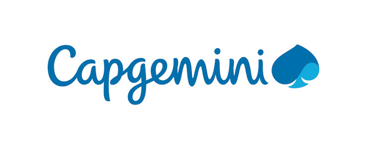

Présentation de mon entreprise

Capgemini est une entreprise de services du numérique française (ESN) créée par Serge Kampf en 1967 à Grenoble (Isère), sous le nom de Sogeti. Basée à Paris, la société fait partie du CAC 40 à la Bourse de Paris.
Métiers et activités
Le groupe définit ses métiers en 4 grandes catégories[48] : le conseil en stratégie et transformation à travers Capgemini Invent : 6 % du CA, 12 680 salariés les services applicatifs : 64 % du CA, 122 555 salariés les services de technologie et d'ingénierie : 15 % du CA, 27 470 salariés les autres services d'infogérance : 15 % du CA, 46 490 salariés Les effectifs offshore du groupe représentent près de 122 000 salariés et 58 % de l’effectif total. (2018)
Domaines d'activité
Mon rôle
Le technicien support informatique à deux fonctions bien distinctes. La plus importante est celle d’accompagnement et d'assistance, de maintenance et de dépannage auprès des utilisateurs. Il doit intervenir rapidement en cas de panne matérielle ou logicielle pour limiter l'impact négatif sur le service. Il assiste aussi les agents de la collectivité ou administration pour les former, résoudre les conséquences d'erreurs d'utilisation, expliquer le fonctionnement et écouter les questions et remarques sur le fonctionnement des équipements. Il assure aussi la mise à jour des logiciels. Il est « l'interface » entre les utilisateurs et le reste des services informatiques.
Le technicien support informatique gère également l’installation des équipements et des logiciels informatiques. Il intervient sous le contrôle de l'administrateur SI pour la mise en œuvre des réseaux et de matériels aussi variés que les ordinateurs, les imprimantes, les routeurs et l'ensemble des équipements informatiques. Il effectue un contrôle et des mises à jour préventives en matière de sécurité informatique.
Autres appellations du métier : technicien d'assistance utilisateur informatique, technicien de maintenance informatique, technicien d'assistance informatique, technicien support et services, programmeur, assistant fonctionnel, technicien informatique
Missions principales du technicien support informatique
- Installer les équipements informatiques et les logiciels nécessaires au fonctionnement de la collectivité
- Configurer les postes de travail et les logiciels
- Suivre le traitement des demandes des utilisateurs en formation, installations et maintenance
- Résoudre les pannes : diagnostic et dépannage sur place ou à distance
- Assurer la maintenance des logiciels et matériels, mises à jour, réparations, remplacement
- Expliquer les procédures de sauvegarde, veiller à leur respect
- Participer à la formation des utilisateurs
- Veille technologique